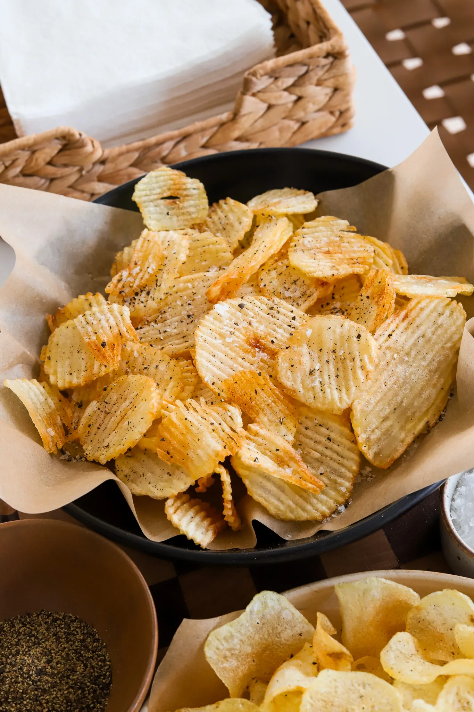

Appetizer | Side Dish | Snack
Homemade Potato Chips
Prep Time: 30 minutes
Cook Time: 20 minutes
Total Time: 50 minutes
Yields: 4 servings
These homemade potato chips bring the classic crunch of Lay's and
Ruffles right to your kitchen, but even better. With just the right
technique, you’ll achieve that perfect light yellow color and crispy
texture. If they came straight out of a chip bag, you wouldn’t even
be able to tell the difference!
Jump to Recipe
INGREDIENTS
- 2 to 3 large potatoes (Russet or Yukon Gold)
- 4 to 6 cups neutral oil (vegetable, canola, or avocado)
- salt, to taste
- black pepper (optional)
INSTRUCTIONS
- Slice the Potatoes: Wash and peel the potatoes. Use a
mandolin
slicer to cut the potatoes into thin slices, about 1/16 to
1/8-inch thick. For regular chips, use the straight blade; for
ruffle-style chips, use the ridge-cut blade.
- Soak the Slices: Place the potato slices in a bowl of ice
water
and soak for 20-30 minutes. This helps to remove excess starch,
making the chips crispier.
- Rinse and Dry:Drain the potatoes and rinse under cold
water until the water runs clear. Pat each slice dry thoroughly
with a clean kitchen towel or paper towels. Ensuring the slices
are dry is crucial for crispy chips and prevents oil splatters.
- Heat the Oil:In a deep pot or pan, heat the oil to 320°F.
Maintaining this temperature is key to achieving that light
yellow color without over-browning.
- Fry in Small Batches:Carefully add a small batch of
potato slices to the oil, ensuring not to overcrowd the pot.
This helps keep the oil temperature steady. After each batch,
check the temperature and let it return to 325-330°F if needed.
- Create the Folds:As the chips begin to fry, gently stir
and push them along the edges of the pot with a slotted spoon to
help form those signature folds and curls before they crisp up.
- Cook to Perfection:Fry the chips for 3-5 minutes or until
they are crisp and a light yellow color. Remove them from the
oil with a slotted spoon and place them on a wire rack set over
a baking sheet to drain any excess oil.
- Season and Serve:While the chips are still hot, sprinkle
them with salt and a pinch of black pepper, if desired. Enjoy
them fresh, or store in an airtight container once cooled.